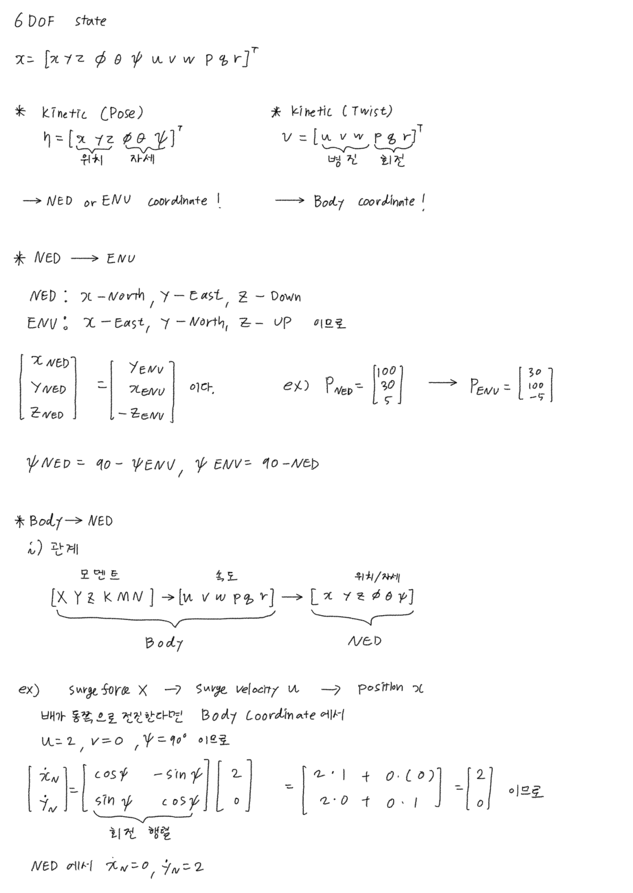
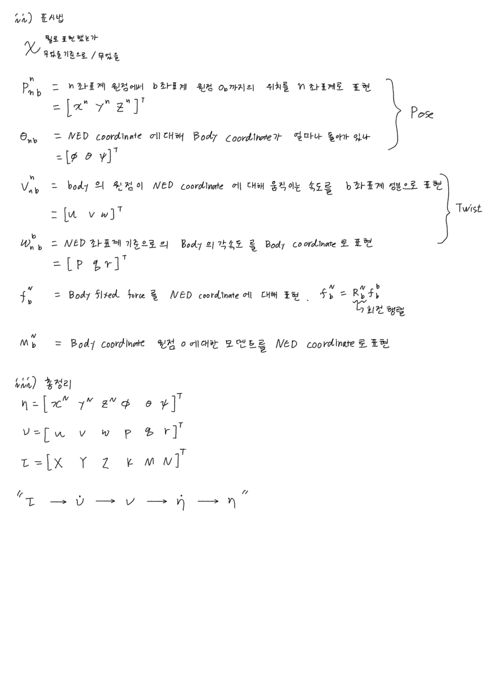
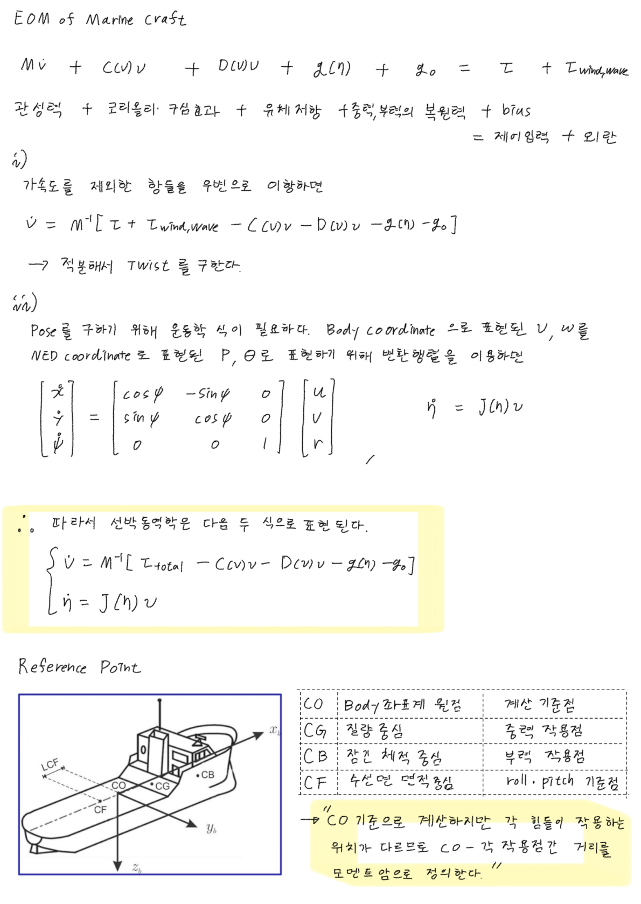

6-DOF Marine Craft Model
한 줄로
“이 배에 이만큼 힘을 주면 10초 뒤 지구상 어디에 있을까”를 계산하는 모델. 강의 116장이 결국 두 줄을 유도한다.
η̇ = J(η) ν ← Kinematics (기구학)
M ν̇ + C(ν)ν + D(ν)ν + g(η) = τ ← Kinetics (동역학)
어디에 앉는가 — 이 노트가 상위다. Rotation Matrix · Euler Angle Rates · Transport Theorem · Moment of Inertia · Rigid-Body Kinetics 가 각각 이 두 줄의 한 칸씩을 채운다.
왜 필요한가
세 가지 용도가 있는데, 결국 같은 모델이다.
- 시뮬레이터 — 실물 배 없이 제어기를 수천 번 테스트. MSS Toolbox, PythonVehicleSimulator가 이걸 구현한 것.
- 항법 (Navigation) — ANSL 맥락에서 가장 직접적. IMU는 BODY 값만 준다. 알고 싶은 건 “북위 얼마, 선수각 몇 도” — 전부 NED 값. 그 간극을 메우는 게
R과T_Θ. - 제어기 설계 — 목표는 항상 지구 기준으로 주어지는데(“저 부표까지”) 손에 쥔 건 프로펠러와 러더뿐. 그 사이 번역이
R.
사슬은 원래 고등학교 물리 두 줄이다
① a = F / m 힘을 알면 가속도를 안다
② Δ위치 = 속도 × 시간 속도를 알면 위치를 안다
힘 → 가속도 → (적분) → 속도 → (변환·적분) → 위치
Fossen의 두 줄은 이것과 같은 사슬이다. 대상이 “점 하나”가 아니라 “물 위에서 여섯 방향으로 움직이는 덩치 큰 강체”라서 두 줄 각각이 뚱뚱해졌을 뿐이다.
이 대응을 잃지 않는 것이 116장을 관통하는 유일한 나침반이었다.
ν 만 봐서는 배가 어디로 가는지 알 수 없다
이것이 방정식이 두 개로 갈라지는 이유 전부다.
같은 ν = [0, 0, 3]ᵀ 라도 배가 수평이면 초속 3 m로 가라앉는 중이고, 오른쪽으로 90° 누워 있으면 서쪽으로 이동 중이다. 배 안의 속도계는 두 경우 모두 똑같은 숫자를 가리킨다.
| Kinematics | Kinetics | |
|---|---|---|
| 다루는 것 | 순수 기하학 | 힘이 원인 |
| 질량 등장? | 안 함 | 함 |
| 식 | η̇ = J(η)ν | Mν̇ + C(ν)ν + D(ν)ν + g(η) = τ |
선형 시스템에서는 위치·속도 관계가 그냥 ṗ = v 라 신경 쓸 게 없다. 6-DOF 강체에서는 이 관계가 비선형이 되어서 따로 떼어냈다.
속도를 알아도 자세를 모르면 위치를 못 구한다. 그래서 통역기
J가ν가 아니라η의 함수다.
Fossen이 이걸 “robot-inspired model”이라 부르는 이유 — 로봇 매니퓰레이터의 M(q)q̈ + C(q,q̇)q̇ + g(q) = τ 와 구조가 판박이고, 배라서 D(ν)ν (유체 감쇠) 하나가 추가된 것.
위치는 NED, 속도는 BODY — 전체에서 가장 중요한 설계 결정
- 위치를 NED에 — “북쪽 100m 지점” 같은 목표는 지구 기준이어야 의미가 있음
- 속도를 BODY에 — ① 질량·관성행렬
M이 상수가 됨 (Moment of Inertia) ② 추력·유체력이 원래 몸체 기준으로 걸림
| {n} NED | {b} BODY | |
|---|---|---|
| 축 | x=북(진북), y=동, z=아래 | x=선수, y=우현, z=아래 |
| 성격 | 관성계로 취급 | 배와 함께 이동·회전 |
| 표현하는 것 | 위치 η | 속도 ν, 힘 τ |
가정 2개: flat earth (지구 곡률 무시), NED = 관성계 (Newton 법칙 적용 가능).
그 대가로 치르는 게
J(η)변환식과C(ν)ν항이다. 공짜가 아니다.
Z축이 아래라서 고도가 오르면 z가 감소하고 yaw는 위에서 봤을 때 시계방향이 +. ROS의 ENU 관례와 정반대 — 센서 데이터 다룰 때 실제로 물리는 지점.
NED ↔ ENU 변환 — ROS와 붙일 때 실제로 필요한 것
NED : x = North, y = East, z = Down
ENU : x = East, y = North, z = Up ← ROS 관례
축 이름만 바뀐 게 아니라 x와 y가 맞바뀌고 z 부호가 뒤집힌다.
⎡ x_NED ⎤ ⎡ y_ENU ⎤ ⎡ 100 ⎤ ⎡ 30 ⎤
⎢ y_NED ⎥ = ⎢ x_ENU ⎥ ex) P_NED=⎢ 30 ⎥ → P_ENU=⎢ 100 ⎥
⎣ z_NED ⎦ ⎣ −z_ENU ⎦ ⎣ 5 ⎦ ⎣ −5 ⎦
선수각도 같이 바뀐다. NED는 북쪽에서 시계방향, ENU는 동쪽에서 반시계방향이라:
ψ_NED = 90° − ψ_ENU ψ_ENU = 90° − ψ_NED
이 변환은 자기 자신이 역변환이다 (두 번 적용하면 제자리). x↔y 교환과 z 부호 반전 둘 다 involution이라서.
표기 읽는 법 — 위첨자와 아래첨자
기호 하나에 세 가지 정보가 들어 있다.
위첨자 = 어느 좌표계 성분으로 적었는가
v^b_nb
아래첨자 = 누구 기준 / 누구의
| 기호 | 읽는 법 |
|---|---|
p^n_nb | {n} 원점에서 {b} 원점까지의 위치를, {n} 성분으로 |
Θ_nb | {n} 에 대해 {b} 가 얼마나 돌아가 있나 (자세) |
v^b_nb | {b} 원점이 {n} 에 대해 움직이는 속도를, {b} 성분으로 |
ω^b_nb | {n} 기준 {b} 의 각속도를, {b} 성분으로 |
f^n_b | body-fixed force 를 {n} 성분으로 = R^n_b f^b_b |
아래첨자가 같아도 위첨자가 다르면 다른 숫자 세 개다.
v^n_nb와v^b_nb는 같은 속도를 다른 자로 잰 것. 손으로 쓸 때 위첨자를 빠뜨리면 유도가 통째로 무너진다.
대부분의 배는 underactuated라서 감결합해 쓴다
옆으로 미는 추진기가 없어 sway를 직접 제어 못 한다.
| 모델 | DOF | 용도 |
|---|---|---|
| 1-DOF | yaw | heading autopilot |
| 1-DOF | surge | 속도 제어 |
| 3-DOF 수평면 | surge, sway, yaw | DP, 경로추종 — 랩에서 주로 쓰는 것 |
| 4-DOF | + roll | 선회 중 롤 저감 |
| 6-DOF | 전부 | 시뮬레이션, 전방향 AUV |
기준점은 CG가 아니라 CO로 잡는다
| 약자 | 뜻 |
|---|---|
| CO | Coordinate Origin — BODY 좌표계 원점 (우리가 정함) |
| CG | Centre of Gravity — 무게중심 |
| CB | Centre of Buoyancy — 부심 |
| CF | Centre of Flotation — 부양중심 |
강의는 CG가 아니라 CO 기준으로 방정식을 쓰라고 권한다. 이유는 CG가 시간에 따라 변하기 때문 — 연료를 쓰면 가벼워지고 화물을 실으면 위치가 바뀐다. CO는 제어 목적에 맞춰 고른다 (접안이면 실제 회전 중심, 경로추종이면 경로를 따라갈 기준점).
수식
핵심 벡터 3종 (SNAME 표기)
| DOF | 운동 | η (NED) | ν (BODY) | τ (BODY) |
|---|---|---|---|---|
| 1 | surge / 전후동요 | x | u | X |
| 2 | sway / 좌우동요 | y | v | Y |
| 3 | heave / 상하동요 | z | w | Z |
| 4 | roll / 횡동요 | φ | p | K |
| 5 | pitch / 종동요 | θ | q | M |
| 6 | yaw / 선수동요 | ψ | r | N |
η = [x, y, z, φ, θ, ψ]ᵀ ← 어디에 어떤 자세로 있나
ν = [u, v, w, p, q, r]ᵀ ← 얼마나 빨리 움직이나
τ = [X, Y, Z, K, M, N]ᵀ ← 무슨 힘이 걸리나
야코비안 J(η)
⎡ R^n_b(Θ) 0 ⎤
J(η) = ⎢ ⎥ η̇ = J(η)·ν
⎣ 0 T_Θ(Θ) ⎦
읽는 법
- 대각선에만 블록 → 선속도 변환과 각속도 변환이 서로 안 섞인다.
J는 사실η전체가 아니라 자세Θ = [φ,θ,ψ]에만 의존한다 — 북쪽 100m에 있든 500m에 있든 선수가 북동쪽이면 북동쪽으로 간다. 그래서J(Θ)라고 쓰는 문헌도 많다.
행렬 목록
| 기호 | 이름 | 출처 |
|---|---|---|
R^n_b(Θ) | 회전행렬 3×3 | Rotation Matrix |
T_Θ(Θ) | 각속도 변환 3×3 | Euler Angle Rates |
J(η) | 야코비안 6×6 | 위 둘의 블록대각 |
M | 관성행렬 6×6 | 질량·관성모멘트 + added mass — Rigid-Body Kinetics · Moment of Inertia |
C(ν) | Coriolis 6×6 | Transport Theorem 이 만들어낸 항 → Rigid-Body Kinetics 에서 조립 |
D(ν) | 감쇠행렬 6×6 | 유체 저항 |
g(η) | 복원력 6×1 | 중력·부력 |
전체 시뮬레이션 루프 — 강의 전체가 결국 이 반복문 하나를 만드는 것.
while True:
τ = controller(η, η_목표) # 제어기
ν̇ = M⁻¹ · (τ − C(ν)ν − D(ν)ν − g(η)) # KINETICS: 힘 → 가속도
ν = ν + ν̇·dt # 적분 → BODY 속도
η̇ = J(η) · ν # KINEMATICS: 통역
η = η + η̇·dt # 적분 → NED 위치·자세
η̇ = J(η)ν한 줄이 없으면 루프가 안 닫힌다. 제어기는 지구 기준 목표를 보는데 동역학은 배 기준 속도를 뱉으니 언어가 다르기 때문.
항법에서 읽으면 — 이 한 줄이 곧 strapdown INS의 골격이고, GPS와 융합하는 EKF의 prediction step이다.
자이로 [p,q,r] ──T_Θ──► [φ̇,θ̇,ψ̇] ──적분──► 자세 [φ,θ,ψ]
│
▼ (이 자세로 R을 만든다)
가속도계 ──R──► NED 가속도 ──적분──► NED 속도 ──적분──► 위치
검산
| 확인 항목 | 결과 | 맞는 이유 |
|---|---|---|
Θ = 0 일 때 J(η) | I₆ | 두 좌표계가 정렬되면 통역이 필요 없다 |
ν = [0,0,3]ᵀ, 수평 | η̇ 의 z 성분 = 3 | z-down이므로 가라앉는 중 |
ν = [0,0,3]ᵀ, 우현 90° 누움 | η̇ 가 서쪽 성분을 가짐 | 배의 아래축이 서쪽을 향하므로. 같은 ν, 다른 결과 |
J 의 두 블록이 섞이는가 | 안 섞임 | 블록대각이므로 선속도·각속도 독립 |
헷갈렸던 점
”ν 와 v 는 같은 기호다”
다르다. ν(뉴)는 6×1 속도 벡터 전체, v(브이)는 그 안의 sway 성분 하나. 손으로 쓸 때 제일 사고나기 쉬움.
”C(ν)ν 는 배에 걸리는 실제 힘이다”
물이 밀거나 바람이 부는 게 아니라, 회전하는 좌표계에서 방정식을 쓰기로 한 선택의 대가로 수학적으로 튀어나온 항. 자세한 건 Transport Theorem.
”J 는 η 전체의 함수다”
이름은 J(η) 지만 실제로는 자세 Θ 에만 의존한다. 위치(x,y,z)는 방향에 영향을 안 준다.
내가 실제로 써본 곳
- 2026-09-04 — 상태벡터 정의 · 표기법 · NED↔ENU · 기준점(CO/CG/CB/CF)까지 손으로 정리.



위 손계산에서 잡힌 슬립 (2026-09-04)
η,ν를 Kinetic 이라 적었지만 둘 다 Kinematic 이다. kinetics는 힘 쪽(M,C,D,g)을 가리킨다. ②v^n_nb = [u v w]ᵀ로 적었는데 설명은 "b좌표계 성분"이다. 위첨자가b여야 한다. ③ψ=90°예제의 행렬 계산 중간줄에서cos/sin이 행을 바꿔 들어갔다 ([2;0]으로 적힘). 최종 답ẋ_N=0, ẏ_N=2는 맞다.①
- 아직 직접 구현한 적 없음. Capstone Otter USV 의 Otter USV 모델이 이 구조를 그대로 쓰고 있었다는 걸 이제 알게 됨
- LOS Guidance, Stanley Controller 가 만들어내는 명령이 결국 이 모델의
τ로 들어감 - Transfer Function — 1-DOF로 축소해서 선형화하면 전달함수가 나오는 지점
참고
- 강의 : 제어공학특론 — Dynamic Model of Marine Craft (윤원근 교수, CNU AVSE)
- 교재 : T. I. Fossen, Handbook of Marine Craft Hydrodynamics and Motion Control
- Lecture Notes TTK 4190 (NTNU, Fossen)
- 툴박스 : MSS Toolbox — https://github.com/cybergalactic/MSS / PythonVehicleSimulator